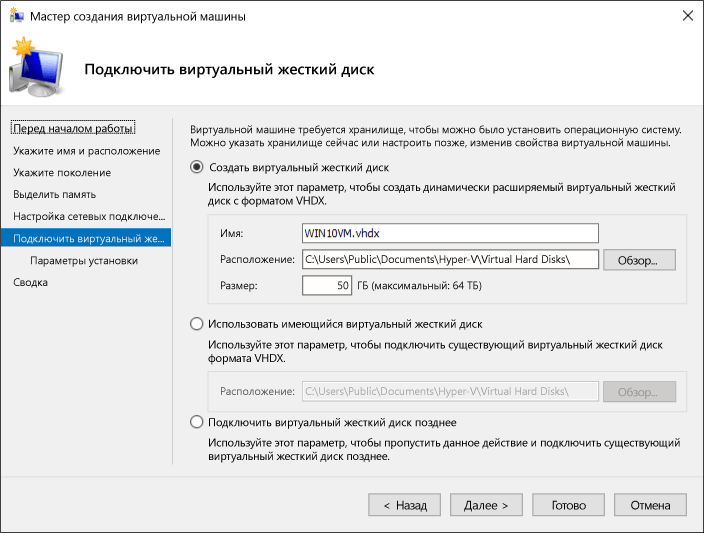

Создание в системе виртуальной машины для исполнения приложений.
Режим виртуальных машин для исполнения приложений реального режима
Разработчики рассматриваемого семейства микропроцессоров в своем стремлении обеспечить максимально возможную совместимость архитектуры пошли не только на то, чтобы обеспечить возможность программам, созданным для первых 16-разрядных ПК, без проблем выполняться на компьютерах с более поздними моделями микропроцессоров за счёт введения реального режима работы. Они также обеспечили возможность выполнения 16-разрядных приложений реального режима при условии, что сам процессор при этом функционирует в защищённом режиме работы и операционная система, используя соответствующие аппаратные средства микропроцессора, организует мультипрограммный (мультизадачный) режим. Другими словами, микропроцессоры i80x86 поддерживают возможность создания операционных сред реального режима при работе микропроцессора в защищённом режиме. Если условно назвать 16-разрядные приложения DOS-приложениями (поскольку в абсолютном большинстве случаев это именно так), то можно сказать, что введена поддержка для организации виртуальных DOS-машин, работающих вместе с обычными 32-битовыми приложениями защищённого режима. Это даже нашло отражение в названии режима работы микропроцессоров i80x86 – режим виртуального процессора i8086, иногда (для краткости) его называют режимом V86 или просто виртуальным режимом, – при котором в защищённом режиме работы может исполняться код DOS-приложения. Мультизадачность при выполнении нескольких программ реального режима будет поддержана аппаратными средствами защищённого режима.
Переход в виртуальный режим осуществляется посредством изменения бита VM(virtualmode) в регистре EFLAGS. Когда процессор находится в виртуальном режиме, для адресации памяти используется схема реального режима работы – (сегмент: смещение) с размером сегментов до 64 Кбайт, которые могут располагаться в адресном пространстве размером в 1 Мбайт, однако полученные адреса считаются не физическими, а линейными. В результате применения страничной трансляции осуществляется отображение виртуального адресного пространства 16-битового приложения на физическое адресное пространство. Это позволяет организовать параллельное выполнение нескольких задач, разработанных для реального режима, да ещё и совместно с обычными 32-битовыми приложениями, требующих защищённого режима работы. Естественно, что для обработки прерываний, возникающих при выполнении 16-битовых приложений в виртуальном режиме, процессор возвращается из этого режима в обычный защищённый режим. В противном случае невозможно было бы организовать полноценную виртуальную машину. Очевидно, что обработчики прерываний для виртуальной машины должны эмулировать работу подсистемы прерываний процессораi8086. Другими словами, прерывания отображаются в операционную систему, работающую в защищённом режиме, и уже основная ОС моделирует работу операционной среды выполняемого приложения.
Вопрос, связанный с операциями ввода/вывода, которые недоступны для обычных приложений, решается аналогично. При попытке выполнить недопустимые команды ввода/вывода возникают прерывания, и необходимые операции выполняются операционной системой, хотя задача об этом и «не подозревает». При выполнении команд IN,OUT,INS,OUTS,CLI,STIпроцессор, находящийся в виртуальном режиме и исполняющий код на уровне привилегий третьего (самого нижнего) кольца защиты, за счёт возникающих вследствие этого прерываний переводится на выполнение высоко привилегированного кода операционной системы.
Таким образом, ОС может полностью виртуализировать ресурсы компьютера: и аппаратные, и программные, создавая иную полноценную операционную среду; при существовании так называемых нативных приложений, создаваемых по собственным спецификациям данной ОС. Очень важным моментом для организации полноценной виртуальной машины является реализация виртуализации не только программных, но и аппаратных ресурсов. Так, например, в ОСWindowsNTэта задача выполнена явно неудачно, тогда как в OS/2 имеется полноценная виртуальная машина как для DOS-приложений, так и для приложений, работающих в среде спецификацийWin16. Правда, в последнее время это уже перестало быть актуальным, поскольку появилось большое количество приложений, работающих по спецификациям Win32API.
Создание виртуальной машины с помощью Hyper-V в Windows10
Создание виртуальной машины и установка на нее операционной системы. Вам потребуется ISO-файл для операционной системы, которую требуется запустить.
Создание виртуальной машины с помощью диспетчера Hyper-V
-
Откройте диспетчер Hyper-V, нажав клавишу Windows и введя в строке поиска "диспетчер Hyper-V", выполните поиск диспетчера Hyper-V в своих приложениях.
-
В диспетчере Hyper-V щелкните Действие > Создать > Виртуальная машина, чтобы открыть мастер создания виртуальной машины.
-
Просмотрите содержимое страницы "Приступая к работе" и нажмите кнопку Далее.
-
Присвойте имя виртуальной машине.
Примечание. Это имя, используемое Hyper-V для виртуальной машины, а не имя компьютера, присвоенное гостевой операционной системе, которая будет развернута внутри виртуальной машины.
-
Выберите расположение, где будут храниться файлы виртуальной машины (например, c:\virtualmachine). Можно также оставить расположение по умолчанию. По завершении нажмите кнопку Далее.

-
Выберите поколение виртуальной машины и нажмите кнопку Далее.
В виртуальных машинах поколения 2, которые появились в Windows Server 2012 R2, доступна упрощенная модель виртуального оборудования и некоторые дополнительные функциональные возможности. На виртуальную машину поколения 2 можно установить только 64-разрядную версию операционной системы.
Если новая виртуальная машина относится к поколению 2 и будет работать под управлением дистрибутива Linux, потребуется отключить безопасную загрузку.
-
Выберите 2048МБ в качестве значения параметра Память, выделяемая при запуске и не снимайте флажок Использовать динамическую память. Нажмите кнопку Далее.
Память распределяется между узлом Hyper-V и виртуальной машиной, работающей на этом узле. Число виртуальных машин, которые могут работать на одном узле, зависит, в частности, от объема доступной памяти. Виртуальную машину можно также настроить для использования динамической памяти. При включении динамическая память высвобождает неиспользуемую память работающей виртуальной машины. Это позволяет большему количеству виртуальных машин работать на узле.
-
В мастере настройки сети выберите для данной виртуальной машины виртуальный коммутатор и нажмите кнопку Далее.
-
Присвойте имя виртуальному жесткому диску, выберите расположение или оставьте значение по умолчанию, а затем укажите размер. По окончании нажмите кнопку Далее.
Виртуальный жесткий диск представляет собой память для виртуальной машины, чем напоминает физический жесткий диск. Виртуальный жесткий диск требуется для установки операционной системы на виртуальной машине.

-
В мастере параметров установки выберите элемент Установить операционную систему из файла загрузочного образа, а затем выберите ISO-файл нужной операционной системы. Нажмите кнопку Далее после завершения.
При создании виртуальной машины можно настроить некоторые параметры установки операционной системы. Доступны три варианта.
-
Установить операционную систему позднее. Этот параметр не вносит какие-либо дополнительные изменения в виртуальную машину.
-
Установить операционную систему из файла загрузочного образа. Действие этого параметра аналогично вставке компакт-диска в физический дисковод компьютера. Чтобы настроить этот параметр, выберите ISO-образ. Этот образ будет подключен к дисководу виртуальной машины. Меняется порядок загрузки виртуальной машины: загрузка начинается с дисковода.
-
Установить операционную систему с сетевого сервера установки. Этот параметр доступен только тогда, когда виртуальная машина подключена к сетевому коммутатору. В этой конфигурации виртуальная машина предпринимает попытки загрузиться из сети.
-
-
Просмотрите информацию о данной виртуальной машине и нажмите кнопку Готово для завершения создания виртуальной машины.
Создание виртуальной машины с помощью PowerShell
-
Откройте интегрированную среду сценариев PowerShell от имени администратора.
-
Выполните следующий скрипт.
# Set VM Name, Switch Name, and Installation Media Path. $VMName = 'TESTVM' $Switch = 'External VM Switch' $InstallMedia = 'C:\Users\Administrator\Desktop\en_windows_10_enterprise_x64_dvd_6851151.iso' # Create New Virtual Machine New-VM -Name $VMName -MemoryStartupBytes 2147483648 -Generation 2 -NewVHDPath "D:\Virtual Machines\$VMName\$VMName.vhdx" -NewVHDSizeBytes 53687091200 -Path "D:\Virtual Machines\$VMName" -SwitchName $Switch # Add DVD Drive to Virtual Machine Add-VMScsiController -VMName $VMName Add-VMDvdDrive -VMName $VMName -ControllerNumber 1 -ControllerLocation 0 -Path $InstallMedia # Mount Installation Media $DVDDrive = Get-VMDvdDrive -VMName $VMName # Configure Virtual Machine to Boot from DVD Set-VMFirmware -VMName $VMName -FirstBootDevice $DVDDrive
Завершение развертывания операционной системы
Чтобы завершить создание виртуальной машины, необходимо ее запустить и выполнить пошаговые инструкции по установке операционной системы.
-
В диспетчере Hyper-V дважды щелкните виртуальную машину. Запустится средство VMConnect.
-
В VMConnect нажмите зеленую кнопку "Пуск". Это аналогично нажатию кнопки питания на физическом компьютере. Нажмите любую клавишу для загрузки с компакт- или DVD-диска при появлении соответствующего запроса.
Примечание. Чтобы убедиться, что нажатия клавиш отправляются в виртуальную машину, щелкните внутри окна VMConnect.
-
Виртуальная машина загрузится для установки, и можно будет выполнить пошаговую установку аналогично процедуре на физическом компьютере.

Примечание. Если вы не используете корпоративную лицензию на Windows, требуется отдельная лицензия для Windows, установленная в виртуальной машине. Операционная система виртуальной машины не зависит от операционной системы узла.